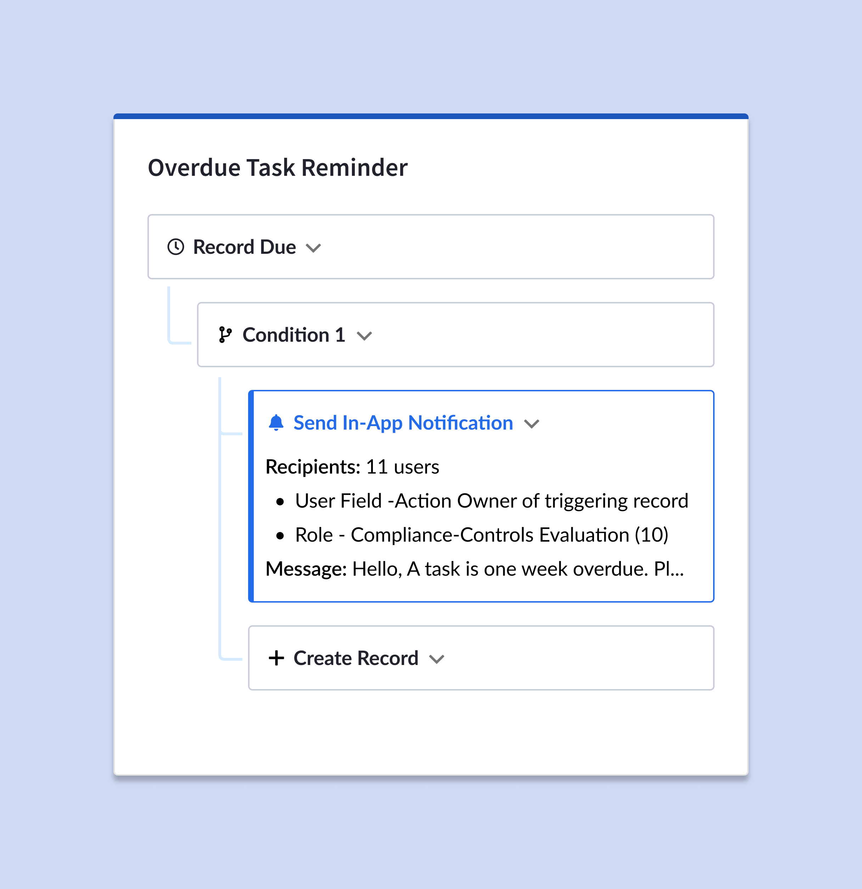
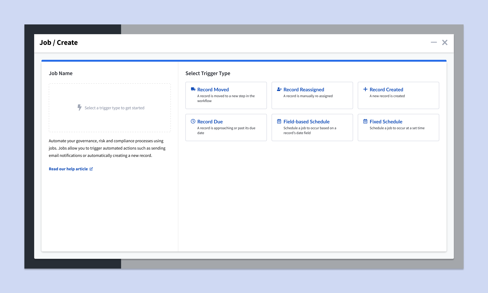
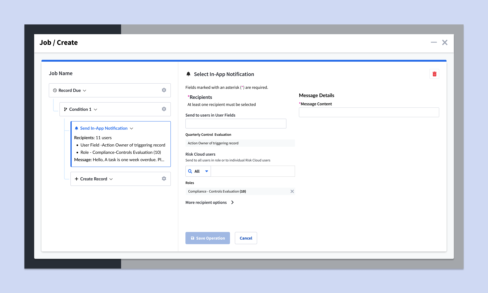
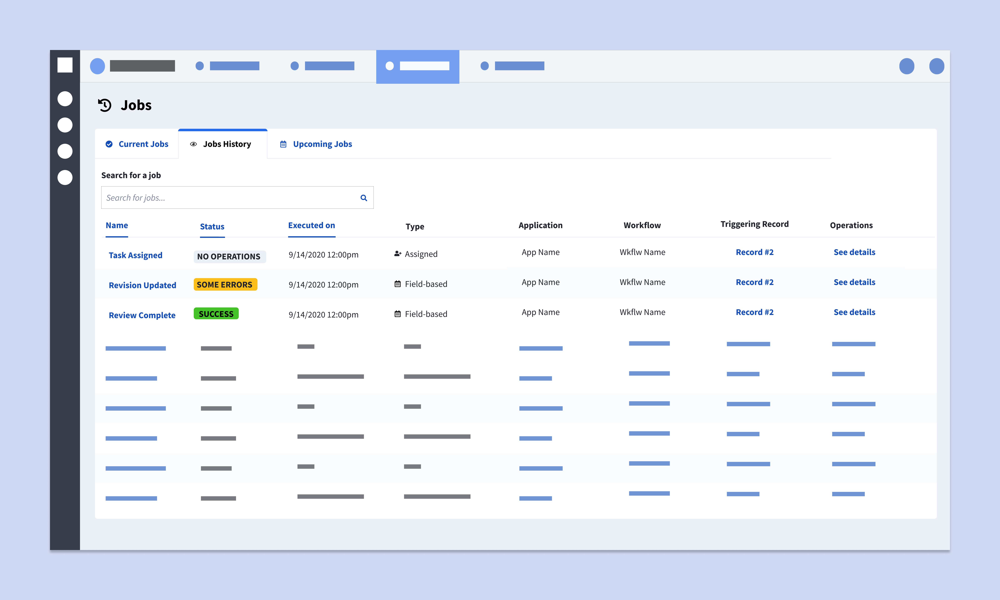
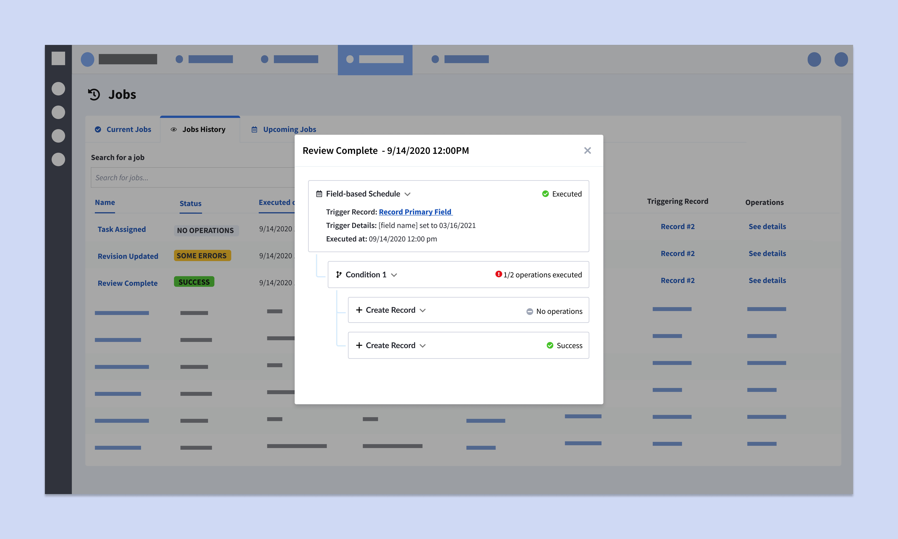
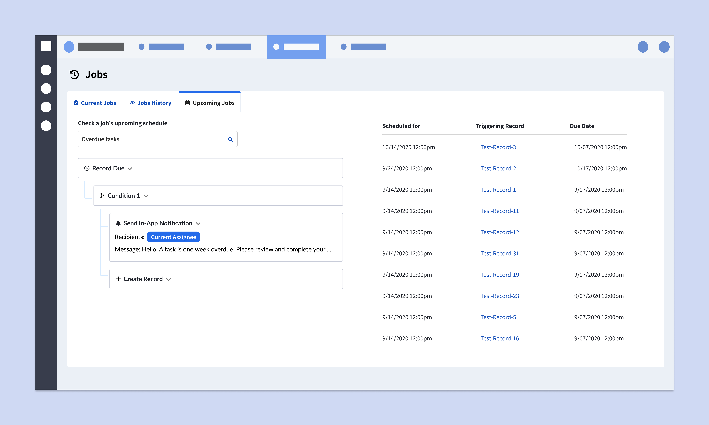

Shifting from B2B to B2B2C: An alternative experience for the novice user base

Summary
Automations were a popular customer feature that allowed users to simplify their workflow using automated jobs. However, the complexity of the feature meant that our support staff spent frequent hours working to create new automations and diagnose errors in customer-created jobs. Additionally, as our customers became more familiar with the feature, they began to push the limits of what they could do, leading to errors and a loss of trust in our system.
Key Insights
After conducting some discovery research and facilitating a series of product workshops, we learned that many customer requests were actually already feasible on the back-end but were obfuscated by a confusing user interface. Also, a lack of trust was preventing customers from increasing their adoption of the feature, and leading to heavy reliance on our internal staff to prove and explain how automations worked. I decided to commit to an interface without such a sharp learning curve which would allow us to shift the user base from our internal customer support staff back to our users and also to invest in more trust-based features for the roadmap.
What we did
This project required changes to taxonomy, for more user-friendly language, an overhaul to the rule building interface to better reveal existing functionality, as well as the addition of several audit capabilities, such as a history log, customer facing alerts, and automations preview, to provide a users a way to see what was going on.




